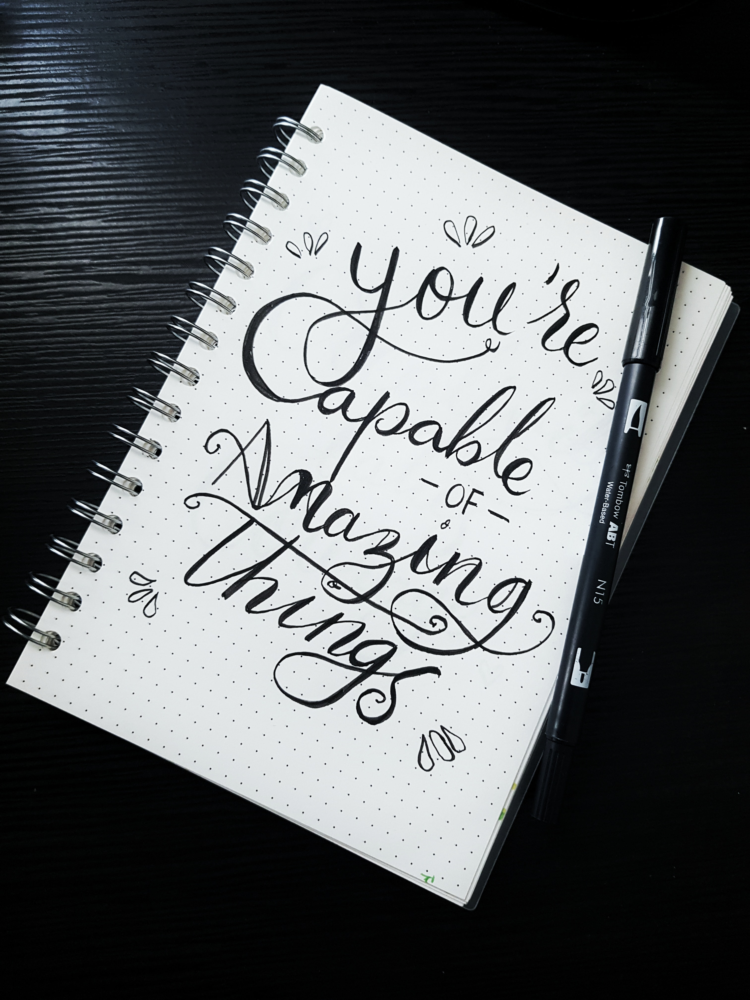

Self Confidence
September 29, 2022 by Davia Smickle

Self Confidence is one of the very important for a person, a person who believes in ones abilities always get success and achieves their goals. A person who has self-confidence is always free to think about its goals without any negativity in mind; they always focus on their goals without any doubt. Those who have confidence in themselves have less or no chance of failure. Even if they fail, they have stamina and the ability to stand up again and start working. Self-Confidence is a person’s quality that helps him believe in his abilities and have faith in himself. Self-confidence makes people happy and robust. Self-confident people can face challenges at the workplace or even at home as they can express themselves with ease and know how to handle situations. Those who lack self-confidence nowadays find it hard to express themselves in society as they always fear people or other things, and society does not exist except it. Self-Confidence is the inner voice of oneself, and it comes from within. If you lack self-confidence, you can build it in various ways, have deep thinking and find out your abilities and work on your thoughts and improve your thoughts. Meditation is also helpful in building self-confidence.
Stepping out of your estimate
September 29,2022 by Davia Smickle

Stepping out of your comfort zone serves two purposes. First, it pushes you to grow by taking on new opportunities and experiences, leading to a life full of variability and intrigue. Yes, there can be risks in trying things you’re not comfortable with, but consider the flip-side. Stepping out of your comfort zone also helps you avoid the specter of complacency. It takes courage and hard work but the potential rewards can be well worth the time and effort. The next time you find yourself pressing the green and red buttons, I would compel you to find a way to step out of your comfort zone, leading to new and exciting ways to experience your life. Everybody's journey in life is different; there are endless possibilities and paths to choose from. Many of us go through similar situations that we learn so much from, but in many different ways. Comfort Zone Brian Tracy, one of the top success speakers and authors in the world, has once said, “Move out of your comfort zone. You can only grow if you are willing to feel awkward and uncomfortable when you try something new. ” His point is that, when one steps out of her comfort zone it will be strange, difficult, or painful. However, one will only grow or learn from the experience if they accept the embarrassment, difficulties, and the awkwardness that come with trying something new.